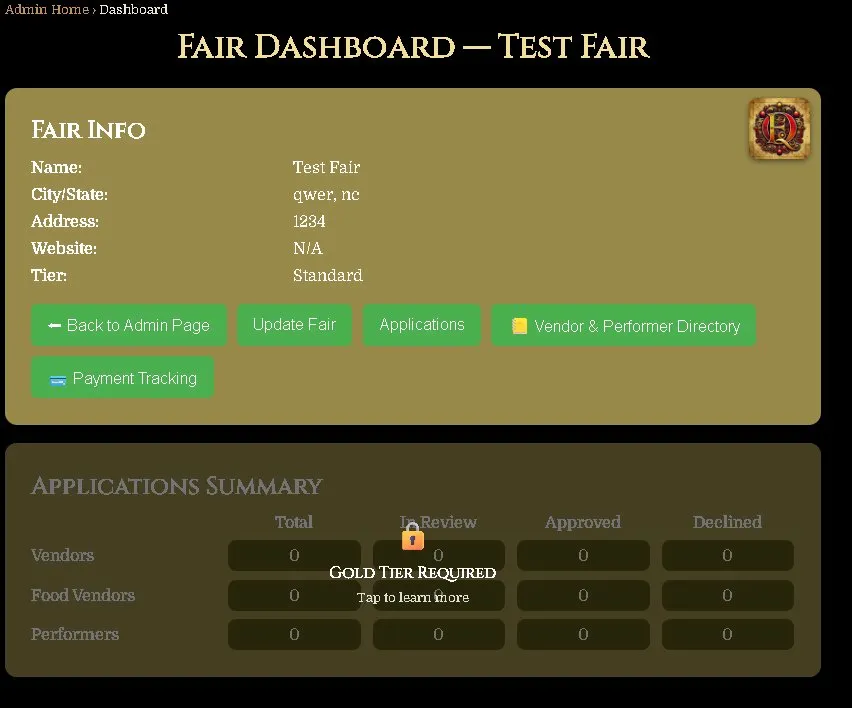
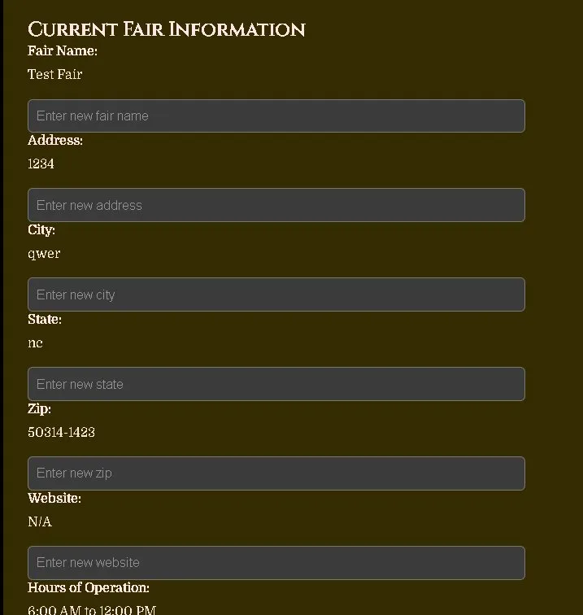
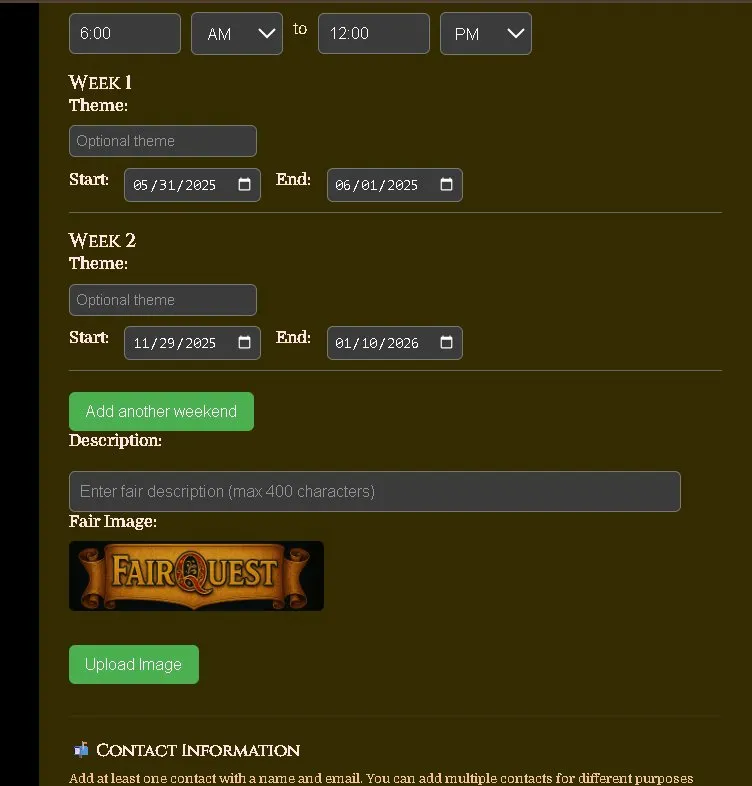
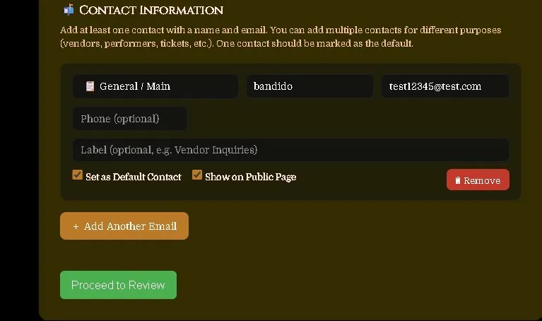

Accessing & Using Your Fair Dashboard
Open Your Fair Dashboard
From the Manage My Fairs page, click on your fair to open its dashboard. If you manage more than one fair, each one will be listed and you can switch between them from here.
The Fair Dashboard shows you a summary of your fair's information and gives you access to all the tools available for your fair.

What You Can Do From the Dashboard
On the basic plan your dashboard gives you access to the following:
• Update Fair — edit all your fair information including name, address, dates, hours, description, image, and contacts.
• Back to Admin Page — return to your list of fairs.
Update Your Fair Information
Click Update Fair to open the fair update form. Here you can edit any of your fair's details. Your current information is shown above each field so you always know what's saved.
You can update:
• Fair Name
• Address, City, State, Zip
• Website
• Hours of Operation

Update Weekend Dates & Fair Image
Scroll down to update your weekend dates. Each weekend has a Start and End date, and an optional theme. Click Add Another Weekend to add more dates if your fair runs multiple weekends.
Below the dates you can add a Description of your fair (up to 400 characters) and upload a Fair Image — this is the photo that appears on your fair's public listing page.

Update Contact Information
At the bottom of the update form you can manage your fair's contacts. You can add multiple contacts for different purposes — general inquiries, vendor coordination, performer coordination, tickets, press, and more.
For each contact you can set:
• Contact Type — General, Vendor, Performer, Tickets, Press, or Other.
• Name & Email — required for each contact.
• Phone — optional.
• Label — optional, e.g. "Vendor Inquiries".
• Set as Default Contact — marks this as the main contact for your fair.
• Show on Public Page — makes this contact visible to visitors on your fair's page.

Review & Confirm Your Changes
When you're done making changes, click Proceed to Review. You'll see a summary of everything before it's saved. Check all the details carefully — your fair name, address, dates, contacts, and image. When everything looks correct, click Confirm Updates to save.